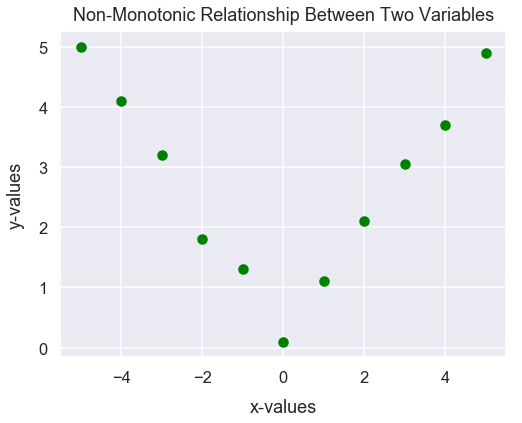

Spearman's Correlation
- Mar 29 • 7 min read
- Key Terms: correlation, scatter plot, python, pandas
Spearman's correlation is a measure of rank correlation between two numerical variables. It's often denoted as \(\rho\) or \(r_{s}\).
For example, a Spearman's correlation test can help better identify the relationship between carats in a diamond ring and its price. Does more carats equate to a higher price?
The Spearman's rank correlation is a non-parametric test so there are no requirements of the distributions of the variables to be tested.
On the other hand, in a Pearson's correlation test, there is assumed to be a linear relationship between two variables. However, the Spearman's rank correlation test can identify non-linear relationships between two variables.
Import Modules
import numpy as np
from scipy import stats
import pandas as pd
import seaborn as sns
import matplotlib.pyplot as plt
% matplotlib inline
sns.set_context("talk")
sns.set_style("darkgrid")
Data Requirements
The assumption for the Spearman's rank correlation test is that there is a monotonic relationship between the two variables being tested. A monotonic relationship exists when one of two following situations exists:
1) As one variable increases, the other variable increases.
2) As one variable increases, the other variable decreases.
Spearman's correlation determines the strength (how large or small) and direction (positive or negative) of the monotonic relationship between two variables.
Visual Examples of Monotonic and Non-Monotonic Relationships
Below, as the x-values increase, the y-values almost always increase too so there is a monotonic relationship.
Note there is an observation in which the x-value at \(-1\) has a smaller y-value of \(-1\) than the previous x-value of \(-2\). So there is not a perfect positive monotonic relationship. Generally, as long as the far majority of observations follow one of the two conditions outlined above, there's a monotonic relationship between two variables.
x = [-5, -4, -3, -2, -1, 0, 1, 2, 3, 4, 5]
y = [-3.2, -2.5, -2.1, -0.8, -1, 1.1, 2.1, 3.8, 6.5, 9.1, 13.8]
plt.figure(figsize=(8, 6))
plt.scatter(x, y, color='red')
plt.xlabel("x-values", labelpad=13)
plt.ylabel("y-values", labelpad=13)
plt.title("Monotonic Relationship Between Two Variables", y=1.015);

Below is a monotonic relationship because as the x-values increase, the y-values decrease.
x = [-5, -4, -3, -2, -1, 0, 1, 2, 3, 4, 5]
y = [5, 4.1, 3.2, 1.8, 1.3, 0.1, -1.1, -2.1, -3.05, -3.7, -4.9]
plt.figure(figsize=(8, 6))
plt.scatter(x, y, color='blue')
plt.xlabel("x-values", labelpad=13)
plt.ylabel("y-values", labelpad=13)
plt.title("Another Monotonic Relationship Between Two Variables", y=1.015);

Here is an example of a non-monotonic relationship because as the x-values increase, the y-values first decrease and then later increase.
x = [-5, -4, -3, -2, -1, 0, 1, 2, 3, 4, 5]
y = [5, 4.1, 3.2, 1.8, 1.3, 0.1, 1.1, 2.1, 3.05, 3.7, 4.9]
plt.figure(figsize=(8, 6))
plt.scatter(x, y, color='green')
plt.xlabel("x-values", labelpad=13)
plt.ylabel("y-values", labelpad=13)
plt.title("Non-Monotonic Relationship Between Two Variables", y=1.015);

Explanation of Coefficient Values
If the Pearson's rank correlation value \(r_{s}\) is positive, as values from one variable increase, values from the other variable increase.
If the rank correlation value is negative, as values from one variable decrease, the values from the other variable increase.
The table below provides some examples of \(r_{s}\) and explanations.
| Spearman's rank correlation | Interpretation |
|---|---|
| 0 | There's no correlation between the two variables |
| -0.25 | There's a small negative correlation between the two variables |
| -0.75 | There's a large negative correlation between the two variables |
| -1.0 | There's a perfect negative correlation between the two variables |
| 0.25 | There's a small positive correlation between the two variables |
| 0.75 | There's a large positive correlation between the two variables |
| 1.0 | There's a perfect positive correlation between the two variables |
Example: Diamonds Dataset - Carat and Price
Get Diamonds Dataset
Import diamonds dataset from Seaborn library and assign to DataFrame df_diamonds.
Each row of df_diamonds contains details about a specific diamond purchased. We'll just utilize the price and carat columns below.
df_diamonds = sns.load_dataset('diamonds')
Preview the first few rows of df_diamonds.
df_diamonds.head()
| carat | cut | color | clarity | depth | table | price | x | y | z | |
|---|---|---|---|---|---|---|---|---|---|---|
| 0 | 0.23 | Ideal | E | SI2 | 61.5 | 55.0 | 326 | 3.95 | 3.98 | 2.43 |
| 1 | 0.21 | Premium | E | SI1 | 59.8 | 61.0 | 326 | 3.89 | 3.84 | 2.31 |
| 2 | 0.23 | Good | E | VS1 | 56.9 | 65.0 | 327 | 4.05 | 4.07 | 2.31 |
| 3 | 0.29 | Premium | I | VS2 | 62.4 | 58.0 | 334 | 4.20 | 4.23 | 2.63 |
| 4 | 0.31 | Good | J | SI2 | 63.3 | 58.0 | 335 | 4.34 | 4.35 | 2.75 |
Explanation of carats
carat is a unit of measurement in diamonds to characterize its mass. Typically, bigger/heavier diamonds are known to be more expensive.
Here's a helpful image from womengettingmaried.com.

View Distribution of Carats versus Diamond Prices
The plot below has carats on the x-axis and price on the y-axis.
df_diamonds.plot.scatter(x='carat', y='price', s=22, alpha=0.25, c='plum', figsize=(11, 8))
plt.xlabel("carats", labelpad=15)
plt.ylabel("price [$]", labelpad=15)
plt.title("Carats versus Price of Diamonds", y=1.015);

At first glance, it seems there's a positive correlation between the two variables. Generally, as carats increase, price increases. However, this relationship doesn't like like an exact linear correlation.
Let's first examine the linear relationship between the two variables by calculating the Pearson's correlation coefficient.
round(stats.pearsonr(df_diamonds['carat'], df_diamonds['price'])[0], 2)
0.92
There is a strong positive linear relationship between the two variables.
Next, let's examine the Spearman's rank correlation value.
round(stats.spearmanr(df_diamonds['carat'], df_diamonds['price'])[0], 2)
0.96
The Spearman's rank correlation value of \(0.96\) is higher than the Pearson's correlation value of \(0.92\). This high value of \(0.96\) and also because it's greater than \(0.92\) means that the relationship between the two variables can be characterized as something that's not linear. This is evident in the visualization. For every unit increase in carats, there's an increasingly greater unit increase in the price. The relationship between the two variables could be characterized closer to exponential than linear.